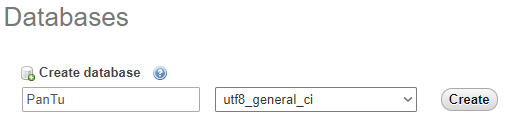

Thank you for purchasing my software. If you have any questions that are beyond the scope of this help file, please feel free to email via my user page contact form. Thanks so much!
sudo apt update
sudo apt-get install apache2
sudo apt-get install mysql-server
sudo mysql_secure_installation
sudo apt-get install php libapache2-mod-php
sudo systemctl restart apache2
sudo a2enmod rewrite
sudo service apache2 restart
sudo nano /etc/apache2/sites-enabled/000-default.confadd these lines at end
<Directory /var/www/html>
AllowOverride All
</Directory>
sudo service apache2 restart
sudo apt install phpmyadmin php-mbstring php-gettext
sudo phpenmod mbstring
sudo systemctl restart apache2
sudo mysql -u root -p
CREATE USER 'phpmyadminuser'@'localhost' IDENTIFIED BY 'phpmyadminpassword';
GRANT ALL PRIVILEGES ON *.* TO 'phpmyadminuser'@'localhost' WITH GRANT OPTION;
exit
sudo nano /etc/apache2/apache2.confThen add the following line to the end of the file:
Include /etc/phpmyadmin/apache.confThen restart apache:
sudo systemctl restart apache2
sudo apt-get install python-pip
sudo pip install youtube-dl
sudo apt install ffmpeg
Thats it !
Set site domain
public static $realpath = 'http://www.yourdomain.com';
Set Database Config
public static $DBhostname = "localhost"; public static $DBusername = "MysqlUsername"; public static $DBpassword = "MysqlPassword"; public static $DBdatabasename = "DatabaseName";
Open phpmyadmin and Create Database Like:
#Charset must be utf8_general_ci

Upload Database/PanTu.sql to Server.
cd /var/www/html
sudo chmod 777 downloads
Go to http://www.yourdomain.com/admin
-Admin Email: demo@pantuapp.com | Password: 123
Go Admin Panel / Server Settings and Check Error messages Youtube-dl Path and Ffmpeg Path.
If you receive errors go server and open Terminal:
For Youtube-dl
which Youtube-dl
"/usr/local/bin/youtube-dl" delete youtube-dl string and paste path to Server Settings.
For Ffmpeg
which ffmpeg
"/usr/bin/ffmpeg" delete ffmpeg string and paste path to Server Settings.
Concept Bootstrap 4 Admin Dashboard Template
Version 1.1 (06.25.2016)